4130B34 supply pipe from fluid resevior to power steering pump r r
- Path
- Procedures > 41 STEERING > 4130 POWER ASSISTED STEERING > 4130B power steering hydraulic sytem > 4130B34 supply pipe from fluid resevior to power steering pump r r
- Kind
- repair procedure (removal / refitting; the operation number is the code)
- Applies to
- all engines; all production periods
- Interactive page
- https://sloeber94.github.io/elrnDB-a156/en/#/3238137
Applies to: all engines; all production periods
 Removing
Removing
 Refitting
RefittingPosition the vehicle on the ramp
Proceed with removal 7055B54 under-engine guard - r r .
Drain the power steering fluid from the reservoir using a suitable syringe.
Proceed with removal 1016A40 ignition coil cover on cylinder head- r+r .
1. Connect the quick-release attachment for the fuel vapour recovery pipe (1a) and move aside after releasing from band (1b) on the power assisted steering fluid reservoir.
2. Release the coolant return pipe to the coolant reservoir from the bands on the modular intake manifold.
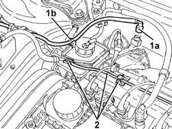
Applies to: all engines; all production periods
Proceed with removal 1008C10 power unit upper reaction link r r .
Proceed with removal 1008C16 body link bracket - r r .
Release the power steering fluid delivery and return pipes from the connection clip.
1. Undo the bolts (1a) and remove the power assisted steering fluid reservoir (1b).
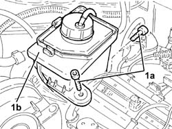
Applies to: all engines; all production periods
1. Loosen the band (1a) and disconnect the supply pipe from the fluid reservoir to the power assisted steering pump (1b), power assisted steering pump side.
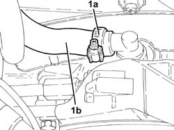
Applies to: all engines; all production periods
1. Loosen the band (1a) and disconnect the supply pipe from the fluid reservoir to the power assisted steering pump (1b), reservoir side and remove.
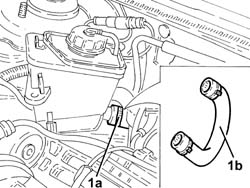
Applies to: all engines; all production periods
Refitting
RemovingPlace the supply pipe from the fluid reservoir to the power assisted steering pump back in its housing, connect to the reservoir and secure it using the band.
Connect the supply pipe from the power steering fluid reservoir to the pump and tighten the band.
Refit in its seating the power steering fluid reservoir and secure it with its bolts.
Proceed with refitting 1008C16 body link bracket - r r .
Proceed with refitting 1008C10 power unit upper reaction link r r .
Secure the rigid return pipe to the coolant reservoir using the bands on the modular intake manifold
Place the fuel vapour recovery pipe in its seating, secure it with the band to the power steering fluid reservoir and connect the relevant quick-release fitting.
Proceed with refitting 1016A40 ignition coil cover on cylinder head- r+r .
Proceed with refitting 7055B54 under-engine guard - r r .
Fill the power steering circuit with the recommended fluid.
 | Type | Component | Name | Qty. |
|---|---|---|---|---|
- | Fluid | POWER ASSISTED STEERING CIRCUIT | TUTELA GI/A | - |
Bleed the power steering system as described below
With the front wheels raised off the ground, with the engine switched off turn the steering wheel to full lock, left and right, 4-5 times.
Check and, if necessary, top up the fluid level in the reservoir.
Remove the car from the ramps.
Start the engine and carry out 4 - 5 full steering wheel turn cycles (right and left).
Top up the fluid level in the reservoir.
Applies to: engines: 2.0 JTS, 2.0 JTS; all production periods
Removing
RefittingEnsure that the ignition key is in the OFF position, then disconnect the negative battery terminal (-).
 | Name | Connector |
|---|---|---|
- | Battery |
Proceed with removal 1016A40 ignition coil cover on cylinder head- r+r .
1. Disconnect the electrical connection from the enablement solenoid of the changeover device actuator.
| Name | Connector |
|---|---|---|
1 | Variable geometry control solenoid |
2. Disconnect the vacuum intake pipe from the air flow switching device actuator and release it from the fastening.
3. Disconnect the linkage from the air flow switching cotrol actuator.
4. Undo the bolts (4a) and remove the air flow switching control actuator (4b).
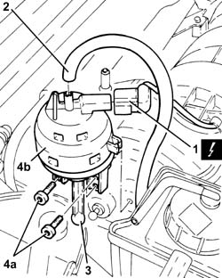
Applies to: engines: 2.0 JTS, 2.0 JTS; all production periods
Release the fuel vapour recovery pipe and the coolant return pipe to the engine coolant supply reservoir from the fastenings on the power assisted steering fluid reservoir.
Drain the power steering fluid from the reservoir using a suitable syringe.
1. Undo the bolts (1a) and move the power assisted steering fluid reservoir (1b) aside.
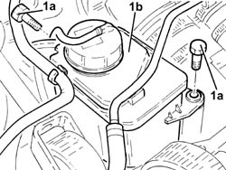
Applies to: engines: 2.0 JTS, 2.0 JTS; all production periods
1. Loosen the band and disconnect the supply pipe from the fluid reservoir to the power assisted steering pump, power assisted steering pump side.
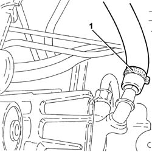
Applies to: engines: 2.0 JTS, 2.0 JTS; all production periods
1. Loosen the band, disconnect the supply pipe from the power assisted steering fluid reservoir to the pump, reservoir side, and remove it.
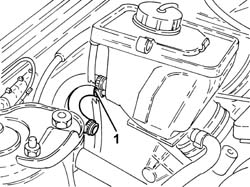
Applies to: engines: 2.0 JTS, 2.0 JTS; all production periods
Refitting
RemovingConnect the supply pipe from the fluid reservoir to the power assisted steering pump, reservoir side and tighten the band.
Connect the supply pipe from the fluid reservoir to the power assisted steering pump, pump side and tighten the band.
Refit in its seating the power steering fluid reservoir and secure it with its bolts.
Fasten the fuel vapour recovery pipe and the coolant return pipe to the engine coolant supply reservoir to the fastenings on the power assisted steering fluid reservoir.
Fit the air flow switching device actuator in its seating and secure it using the bolts.
Connect the linkage to the air flow switching control actuator.
Connect the air flow switching control actuator vacuum intake pipe and secure it to the fastening.
Connect the electrical connection from the enablement solenoid of the changeover device actuator.
Proceed with refitting 1016A40 ignition coil cover on cylinder head- r+r .
Connect the negative (-) battery terminal
Top up the power assisted circuit with the recommended fluid.
| Type | Component | Name | Qty. |
|---|---|---|---|---|
- | Fluid | HYDRAULIC POWER ASSISTED STEERING SYSTEM | TUTELA GI/A | 1.3 |
Bleed the power steering system as described below
With the front wheels raised off the ground, with the engine switched off turn the steering wheel to full lock, left and right, 4-5 times.
Check and, if necessary, top up the fluid level in the reservoir.
Position the vehicle on the ground and start up the engine.
Carry out 4 - 5 complete steering wheel rotation cycles (right and left).
Top up the fluid level in the reservoir.
Applies to: engines: 1.9 JTD 8v , 2.4 JTD 10v; all production periods
Removing
Refitting1092G10 single engine belt r r
4450B10 Front WHEEL (one) - R.R.
7055B64 Engine compartment DUST shield in front wheel arch (one), left or right - R.R.
1008C10 power unit upper reaction link r r
4130B20 power steering pump r r
1. Undo the bolts (1a) and remove the power assisted steering fluid reservoir (1b) away from the engine bulkhead.
2. Disconnect the fluid reservoir-power assisted steering pump supply pipe from the reservoir and remove.
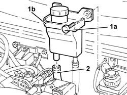
Applies to: engines: 1.9 JTD 8v , 2.4 JTD 10v; all production periods
Refitting
RemovingRefit the feed pipe from fluid reservoir to power steering pump in its housing and connect to the reservoir.
Place the power assisted steering fluid reservoir back in its housing and fix it using the bolts to the bonnet bulkhead.
4130B20 power steering pump r r
1008C10 power unit upper reaction link r r
7055B64 Engine compartment DUST shield in front wheel arch (one), left or right - R.R.
Applies to: engines: 1.9 JTD 16v; all production periods
Removing
RefittingPosition the vehicle on the ramp
Proceed with removal 1016A10 sound-proofing cover - r + r
Proceed with removal 7055B54 under-engine guard - r r
Remove the power steering fluid reservoir cap and drain the fluid using a suitable syringe.
Refit the brake fluid reservoir cap.
1. Disconnect the rapid connector for the supply pipe from the fluid reservoir to the power assisted steering pump, reservoir side.
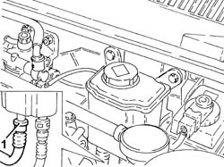
Applies to: engines: 1.9 JTD 16v; all production periods
1. Loosen the band and disconnect the supply pipe from the fluid reservoir to the power assisted steering pump, power assisted steering pump side.
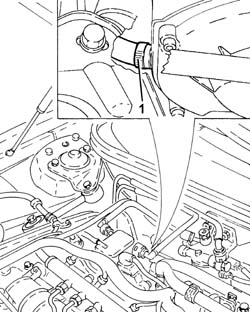
Applies to: engines: 1.9 JTD 16v; all production periods
1. Remove the supply pipe from the fluid reservoir to the power assisted steering pump.
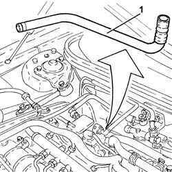
Applies to: engines: 1.9 JTD 16v; all production periods
Refitting
RemovingRefit the feed pipe from fluid reservoir to power steering pump in its housing.
Connect the supply pipe from the fluid reservoir to the power assisted steering pump, pump side and secure it using the band.
Connect the rapid connector for the supply pipe from the power steering fluid reservoir to the pump, reservoir side.
Fill the power steering circuit with the recommended fluid.
| Type | Component | Name | Qty. |
|---|---|---|---|---|
- | Fluid | HYDRAULIC POWER ASSISTED STEERING SYSTEM | TUTELA GI/A | 1.3 |
Bleed the power steering system as described below
With the front wheels raised off the ground, with the engine switched off turn the steering wheel to full lock, left and right, 4-5 times.
Check and, if necessary, top up the fluid level in the reservoir.
Remove the car from the ramps.
Start the engine and carry out 4 - 5 full steering wheel turn cycles (right and left).
Top up the fluid level in the reservoir.
Proceed with refitting 7055B54 under-engine guard - r r .
Proceed with refitting 1016A10 sound-proofing cover - r + r .
Applies to: engines: 2.4 JTD 20v; all production periods
Removing
RefittingPosition the vehicle on the ramp
Proceed with removal 1016A10 sound-proofing cover - r + r .
Proceed with removal 7055B54 under-engine guard - r r .
Proceed with removal 1008C10 power unit upper reaction link r r .
Proceed with removal 4450B04 right front wheel r r .
Proceed with removal 7055B54 under-engine guard - r r .
Proceed with removal - 7055B91 Right front WHEEL ARCH LINER - R.R. .
Proceed with removal - 7055B66 Engine compartment DUST SHIELD protection in right front wheel arch - R.R. .
Proceed with removal 1092G10 single engine belt r r .
Proceed with removal 1084A16 oil dip stick pipe - r r .
Proceed with removal 1060F50 fuel return manifold - r r .
Proceed with removal 1060G70 vacum tank for controlling engine air intake r r .
Proceed with removal 1080D34 engine oil vapour separator - r + r .
Proceed with removal 4130B20 power steering pump r r .
1. Undo the bolts securing the power steering fluid reservoir.
2. Raise the power assisted steering fluid reservoir (2a), as necessary and disconnect the rapid connector (2b) for the supply pipe from the reservoir to the power assisted steering pump, reservoir side.
3. Remove the supply pipe from the fluid reservoir to the power assisted steering pump after having released it from the fastenings.
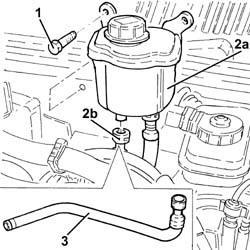
Applies to: engines: 2.4 JTD 20v; all production periods
Refitting
RemovingPlace the supply pipe from the fluid reservoir to the power assisted steering pump back in its housing and secure it.
Connect the rapid connector for the supply pipe from the power steering fluid reservoir to the pump, reservoir side.
Refit in its seating the power steering fluid reservoir and secure it with its bolts.
Proceed with refitting 4130B20 power steering pump r r
Proceed with refitting 1080D34 engine oil vapour separator - r + r .
Proceed with refitting 1060G70 vacum tank for controlling engine air intake r r .
Proceed with refitting 1060F50 fuel return manifold - r r .
Proceed with refitting 1084A16 oil dip stick pipe - r r .
Proceed with refitting 1092G10 single engine belt r r .
Proceed with refitting - 7055B66 Engine compartment DUST SHIELD protection in right front wheel arch - R.R. .
Proceed with refitting - 7055B91 Right front WHEEL ARCH LINER - R.R. .
Proceed with refitting 7055B54 under-engine guard - r r .
Proceed with refitting 4450B04 right front wheel r r .
Proceed with refitting 1008C10 power unit upper reaction link r r .
Proceed with refitting 7055B54 under-engine guard - r r .
Remove the car from the ramps.
Proceed with refitting 1016A10 sound-proofing cover - r + r .
Topics linked from this page (16)
- 1008C10 power unit upper reaction link r r
- 1008C16 body link bracket - r r
- 1016A10 sound-proofing cover - r + r
- 1016A40 ignition coil cover on cylinder head- r+r
- 1060F50 fuel return manifold - r r
- 1060G70 vacum tank for controlling engine air intake r r
- 1080D34 engine oil vapour separator - r + r
- 1084A16 oil dip stick pipe - r r
- 1092G10 single engine belt r r
- 4130B20 power steering pump r r
- 4450B04 right front wheel r r
- 4450B10 Front WHEEL (one) - R.R.
- 7055B54 under-engine guard - r r
- 7055B64 Engine compartment DUST shield in front wheel arch (one), left or right - R.R.
- A1B Battery ( BATTERY NEGATIVE )
- L15 Variable geometry control solenoid